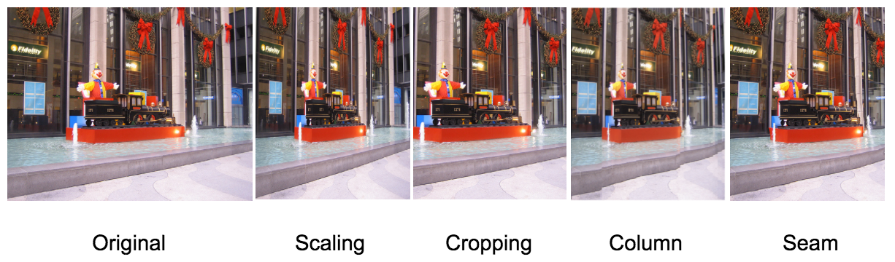

CS766 Project Page
--Seam Carving
Team Members:
Chang Guo
Haiyun Jin
Zhicheng Gu
Project Final report
View the presentation in Google Slides. Try Demos by yourself.
Motivation:
The diversity and versatility of display devices today imposes new demands on digital media. For instance, webpage browsed on phones and laptops shows can automatically resize the letters and use different layout to ensure the comfortness for the user. While, standard image scaling is not sufficient since the contents are affected uniformly. With a smaller device, we better show more important content to emphasize the theme the image wants to convey.
The effective content-aware resizing algorithm has lots of appealing applications, such as aspect ratio change, image retargeting, content amplification, or object removal.
There are several proposed methods such as Scaling, Cropping, Column removal, Pixel removal or Optimal removal. Scaling preserves all information but it leads to unrealistic aspect ratio when only one dimension is scaled, the objects in the image looks uncomfortable. Cropping is such a solution when contents are centralized with well-defined shape, but it can not handle situations where the contents are spreaded. While column removal can preserve the irregular shape and details to large extends, it creates artificial incontinuity along smooth boundary. Others like Pixel removal and Optimal removal has no guarantee of preserving the important content and, even worse, the geometry of the image.
Figure 1: Comparison of different image resizing methods
Method:
-
1-D Seam Carving
The key part of the seam carving algorithm is how to find the best seam to remove.

Figure 2: The best seam to remove
We use edge-base measure for input measure. We calculate the energy map by e(i) = gradient(x) + gradient(y).

Figure 3: Energy map
After get the energy map, we need to get the optimal seam. The optimal seam is the seam with the minimum accumulate enery. The process to get the optimal seam is shown in the following figures. We use dynamic programming method to find the optimal seam. The first step is traverse the image from the second row to the last row. For each cell in the seam energy map, its value is equal to the minimum value of its neighbor in the last row adding the corresponding energy in the energy map.
Figure 4: Energy map and seam energy map
Figure 5: The best seam to remove in the seam energy map
The result of 1-D seam carving is shown in the following figure.

Figure 6: The result of 1-D seam carving

Figure 7: Compare of different image resize mathod
-
Suppose a resize task is to change a mxn image to m’xn’, where m’< m and n’< n. The solution is to remove m-m’ vertical seams and n-n’ horizontal seams. Since each pixel can be removed both by vertical or horizontal seams, the order seam removal of 2 dimensional resize matters. Do we remove all the vertical seams and then the horizontal? Or alternatively one by one? Or two by two? None of the proposed solution takes the change of the image into consideration although some of them works well enough most of time. In this implementation, we employed dynamic programming method to find the optimal remove order. Upon the request of a given size, which m-m’ columns and n-n’ rows to be removed, the order of removal is determined from the DP table built by trying out all combinations and the total computing time is O(m+n). This has a major advantage that the enumeration is time consuming. While, this can be advantage if the DP table is saved. The DP table is small in size by nature. Once the DP table is built and saved, if the user change her mind and wants to retarget the image to other size, we don’t have to recalculated table again. If few seams are to be removed, the optimal remove order can directly read from the table. If more seams are to be removed, we just update the DP table at lower cost.
Figure 8: Removalorder table
The result of 2-D seam carving is shown in the following figure.
Figure 9: Result of 2-D seam carving
Applications:
-
Image enlargement
Find the first k seams for removal, then duplicate them in order. Compared with rescale directly, seam carving achieves better results.
Figure 10: Result of image enlargement
-
Content Amplification
Apply standard scaling to image, then do seam carving on scaled image to carve back to its’ original size.

Figure 11: Result of content amplification
-
Object Removal
The seam carving algorithm can also used to remove an certain object in an image. To remove an object in an image, we first need to circle the object in the image. In the following figure, the original image is the image on the top left, while the object to remove is shown in the bottom left. After get the the object, we will set the energy of these points to negetive infinite. Then we can do a common seam carving over the image. Since the energy of the object is already set to negetive infinite, then the first few seam we remove will definitely cross the object. After we remove all of the points of the object, the seam carving process is stopped. Now we get the result image, which is the one on the top right.
Figure 12: Result of object removal
-
Multi-size images
So far, we have assumed that the user knows the target size ahead of time, but this might not be possible in some cases. Consider, for example, an image embedded in a web page. The web designer does not know, ahead of time, at what resolution the page will be displayed and therefore, cannot generate a single target image. In a different scenario, the user might want to try different target sizes and choose the one most suitable for his or her needs and the demand is real-time retarget without noticeable delay.
Currently, it takes about 2 seconds to retarget a 560x360 pixels image to 360x360 pixels. The user will experience a 2 second freeze if she changes the size of the picture. To alleviate this time delay, we implemented the pre-processed multi-size retarget image approach. The idea is to pre-retarget the image from mxn to mx1, or mxn to 1xn. During the removal, a sequence number is assigned to each pixel which indicates when this pixel is removed. For example, the pixels on the first seam to be removed ( when mxn -> mx(n-1)) are labelled as 0, the pixels on the second seams are labelled 1, and etc. For the retarget part, once we know the target size, the image is reconstructed by only taking pixels that is labelled larger than the number of seams to be removed. For the enlargement, we duplicate all the pixels that has a label smaller than the number of seams. This will give a real-time resize experience.
One limitation of this approach is that the pre-process can not determine 2 dimension resize. Theoretically, this can be done in a similar approach but the order table is a mxmxnxn in size, which makes it impractical to store such a large auxiliary table for all the images.
-
Seam Carving of Video
Below is a naive result of video seam carving. The first video is the original video and the second one is the video after seam carving. The result is not very perfect since we are running seam carving algorithm for each frame independently. To get a better result, we should add relation between the seams in each frames.
Limitations and Future Works
There are several limitations in current implementation.
First, currently, the seam chose to be removed is the continuous seams contains least amount of energy. While, this approach does not take in consideration that the new edge will introduce energy in new image. An alternative approach is to remove the continuous seam that introduces least amount of energy into the system.
Second, the current implementation does not ‘recognize’ important objects. A future work is that we combine the energy evaluation with object detection algorithm. For example, after we get the energy map, we can run a face detection on the original image and then increase the weights of pixels in face regions. Also, the segmentation algorithm can be used to expand the important region to the whole human body instead of just the face. This will give more content awareness of the resize process.
References
- Avidan, Shai, and Ariel Shamir. "Seam carving for content-aware image resizing." ACM Transactions on graphics (TOG). Vol. 26. No. 3. ACM, 2007. https://doi.org/10.1145/1276377.1276390
- scikit-image Python package: http://scikit-image.org/
- Google Images